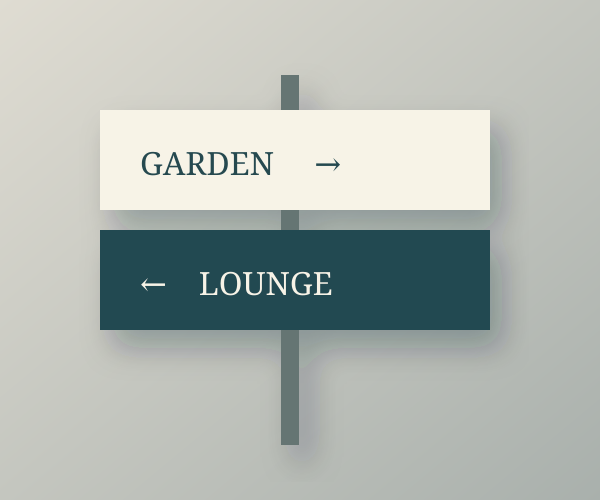

Wayfinding
道をつなぐ案内
目的の場所へ、迷わずに。読む順番と見つけやすさを整える案内サイン。

しるしを、ていねいに。
サイズや文字の配置、素材の違いを見比べるためのデザイン例です。設置環境や見る距離を整理し、用途に合う形を考えます。
架空の企業情報を使用したデザインサンプルです。
ご相談のサンプルを見る ⟶Wayfinding
目的の場所へ、迷わずに。読む順番と見つけやすさを整える案内サイン。

サイズや文字の配置、素材の違いを見比べるためのデザイン例です。設置環境や見る距離を整理し、用途に合う形を考えます。
架空の企業情報を使用したデザインサンプルです。
ご相談のサンプルを見る ⟶